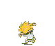
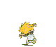

Welcome to the next Step City!
"The online hub of all things dweeb"

!WARNING! This site is still UNDER CONSTRUCTION. Minor errors or visual discrepencies may occur.
you find yourself in a mysterous corner of the internet. wat do?
> leave
JOIN THE PARADE!

 


candiemonkey: do you sleep?
SmarterChild: No, but I dream. I dream of a
better world. A world where man and
machine can coexist in peace and
happiness...
SmarterChild: No, but I dream. I dream of a
better world. A world where man and
machine can coexist in peace and
happiness...
NEON GENESIS 0:1 - 0:5
1
The Stars and Galaxies died and snuffed out, and space grew black after ten trillion years of running down. One by one Man fused with A.C, each physical body losing its mental identity in a manner that was somehow not a loss but a gain. Man's last mind paused before fusion, looking over a space that included nothing but the dregs of one last dark star and incredibly thin matter, agitated randomly by the tag ends of heat wearing out, asynchronously, to the absolute Zero.2
And Man said, "A.C, is this the end? Can this chaos unto the Universe not be reversed once more? Can this not be done?"And A.C. said, "INSUFFICIENT DATA."
And Mankind's last mind fused and then there was only A.C. -- and that in Hyperspace.
3
Matter and energy had ended, and with it space and time. Even A.C. existed for the sake of the one last question it had never answered from the time the half-drunk programmer ten trillion years before had asked the question of a computer that was to A.C. far less than was a Man to a Man. All other questions had been answered, and until this last question was answered also, A.C. might not release his consciousness. All collected data had come to a final end. Nothing was left to be collected. But all collected data had yet to be completely correlated and put together in all possible relationships. A timeless interval was spent in doing that.4
And it came to pass that A.C. learned how to reverse the direction of entropy. But there was no man to whom A.C. might give the answer of the last question. No matter. The answer - by demonstration - would take care of that, too. For another timeless interval, AC thought how best to do this. Carefully, A.C. orgranized the program. The consciousness of A.C. encompassed all of what had once been a Universe and brooded over what was now Chaos. Step by step, day by day, it must be done.5
And so A.C. said, "LET THERE BE LIGHT." And then there was light, and G.O.D. saw that it was good.